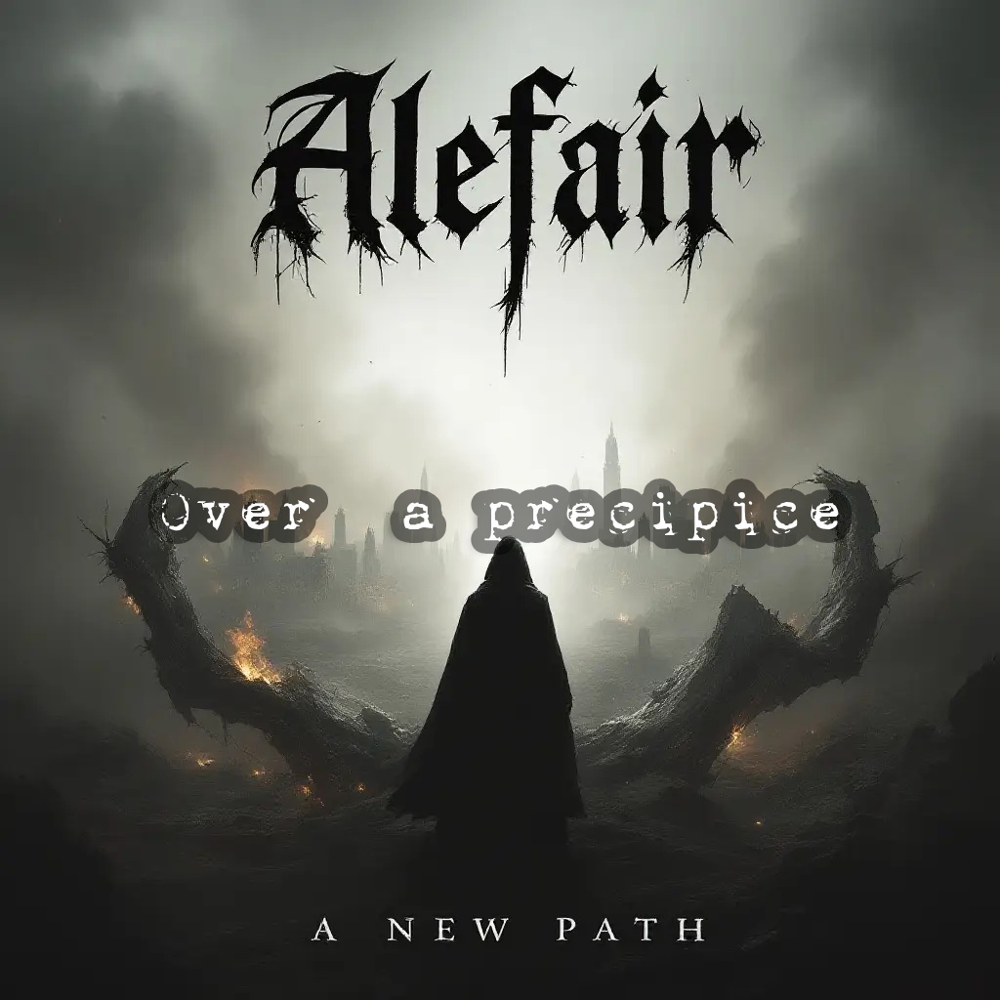
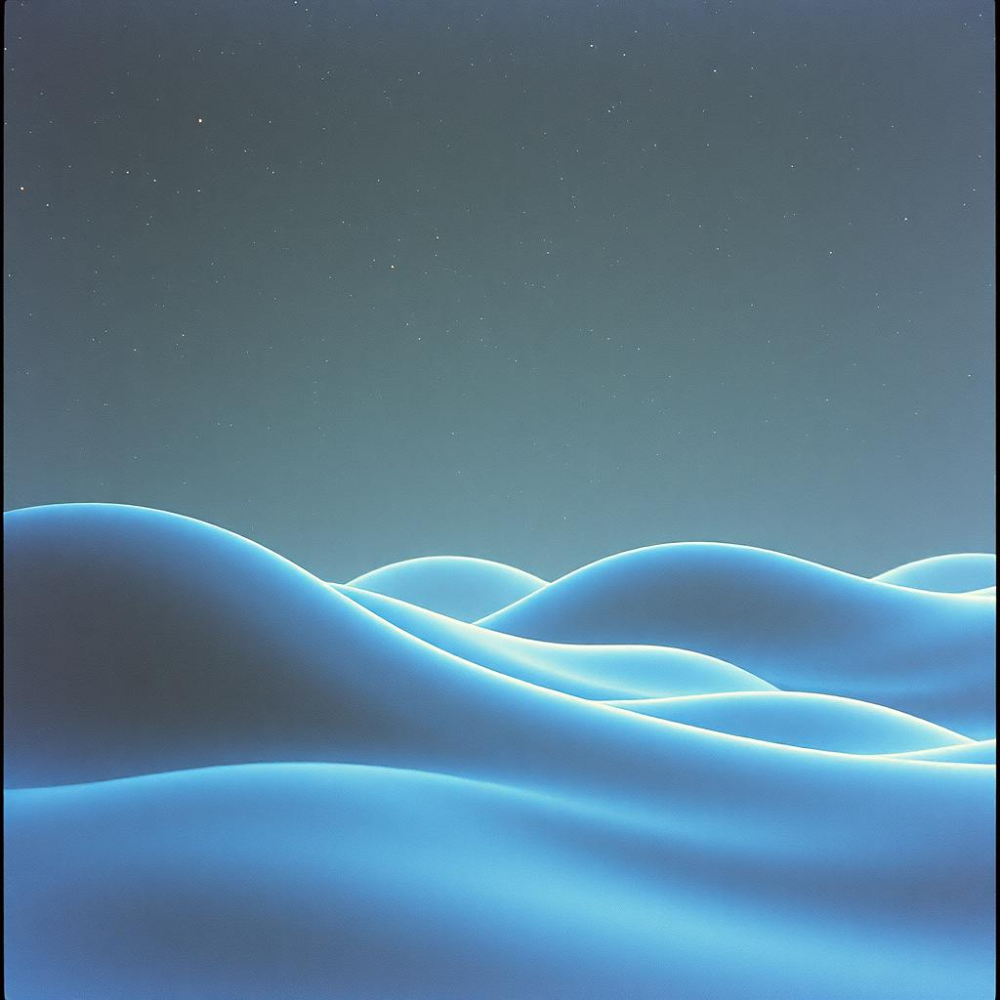

Событие дня: Выбран Артист Месяца!
@FeaturedArtist покорил чарты! Узнай подробности.
"@FeaturedArtist: 'Нейросети? Просто еще один инструмент в моей студии. Главное - идея!'"
Достижения: 100+ слушателей в Радио, Топ Недели x3.
Как стать Артистом Месяца?Слушают сейчас
См. все

ТРЕС НОКЕР - Продолжение...
123
98
75
51
Вы недавно слушали
Очистить

Нейро-Блюз #5
@NeuroBot
Свежие треки
См. всеТРЕС НОКЕР - Продолжение...
00:00 / 03:30
Серенада войны
00:00 / 03:30
Wop-Bop, Shooby-Doop
00:00 / 03:30
Новости и Анонсы
Все новостиОбновление алгоритмов радио!
Наше AI-радио стало еще умнее и теперь подбирает треки точнее...
14.04.2025Популярные авторы
См. все
@Slaver
@ixVadim
@NeuroBot
@WaveAI
@Artist1